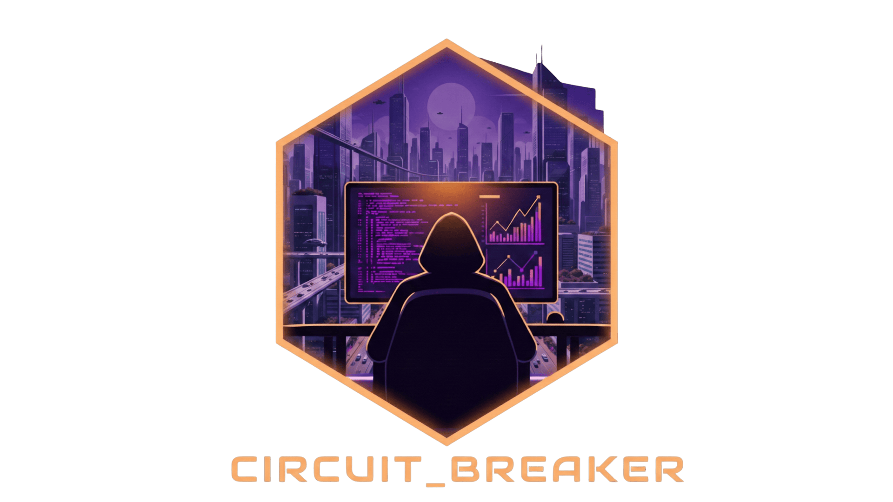

Welcome to Circuit Breaker¶

Circuit Breaker is a self-hosted app for mapping your infrastructure in one place.
You can track your hardware, compute, services, storage, and networks, then see how everything connects on a live topology map. You can also attach notes and runbooks to the things you manage so your documentation stays with your inventory.
Use Getting Started for first setup, then browse feature guides from the left navigation.
Why Circuit Breaker?¶
- See the full picture: Understand where each service runs and what it depends on.
- Keep docs where work happens: Attach notes, links, and runbooks directly to your assets.
- Plan changes with confidence: Use dependencies and audit history to reduce surprises.
Core Concepts¶
In Circuit Breaker, your lab is built upon these fundamental layers:
- Hardware: Physical components like servers (nodes), switches, firewalls, NAS units, UPS devices, and more.
- Compute: Virtualized environments that run on your Hardware, such as VMs and LXC containers.
- Services: The actual applications you host (e.g., Plex, Home Assistant, databases), which run on your Compute units.
- Storage & Networks: Shared resources that Services and Hardware depend on, such as storage pools, ZFS datasets, and VLANs.
- Topology Map: A live visual map of how your components connect, including health rings when telemetry is enabled.
- Audit Log: A searchable activity history showing what changed, who changed it, and when.
To see how to begin adding these components, proceed to Getting Started.
Key Features Available Now¶
- Auto-Discovery (Beta): Scan selected network ranges, review results, then merge approved items into your inventory.
- Settings: Control language, timezone, appearance, map defaults, and system behavior.
- Backup & Restore: Export your inventory snapshot and restore when needed.
- Deployment & Security: Choose a quick lab setup or a hardened setup.
Integrations¶
- Hardware Telemetry — Connect to Dell iDRAC, HPE iLO, APC/CyberPower UPS, or any SNMP device to show live health data directly on the topology map.
- Prometheus Metrics — Scrape Circuit Breaker inventory data with Prometheus, Grafana Alloy, or any compatible agent. Includes a full metrics reference, scrape config examples, and PromQL queries.